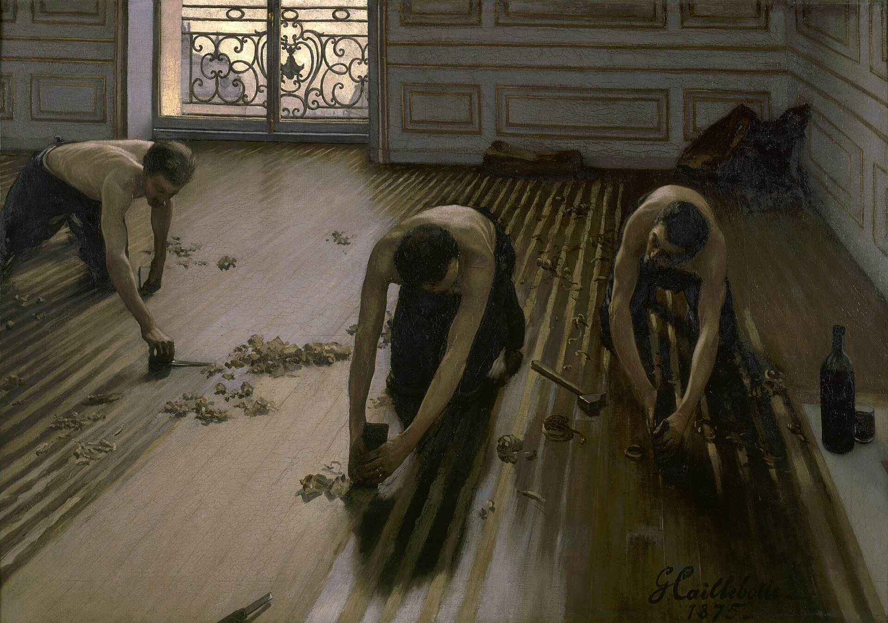

刨地板的工人 The Floor Scrapers
卡耶博特 · 1875年 · 巴黎奥赛博物馆
Gustave Caillebotte · 1875 · Musée d'Orsay, Paris
图片：Wikimedia Commons，公有领域 / Image: Wikimedia Commons, public domain

发现 · Discover
三个工人 Three workers
三个工人跪在地上，用刨子刨木地板，为地板重新上漆做准备。
Three workers kneel on the floor, scraping the wooden boards with planes, preparing them to be refinished.
卷起的木屑 Curls of wood
他们身边散落着一卷卷刨下来的木屑。
Around them lie curls of wood shavings.
窗外的光 Light from the window
光从窗户照进来，刨过的地板闪着光，没刨过的地方颜色更暗。
Light streams in through the window. The scraped boards gleam; the untouched ones are darker.
往下看 Looking down
我们像是站在高处往下看。地板木条的线条，把视线一路引向窗户。
We seem to be looking down from above. The lines of the floorboards draw our eye towards the window.
地上的酒 A drink on the floor
地上放着一瓶酒和一只杯子，是工人们干活时喝的。
On the floor stand a bottle and a glass for the workers.
“粗俗的题材” A “vulgar” subject
1875年，官方沙龙拒绝了这幅画，有评论家说，画工人干活是“粗俗的题材”。
In 1875, the official Salon rejected this painting; some critics called it a “vulgar subject”.
故事 · The story
ACT I 第一幕 · 被拒绝 Rejected
卡耶博特受过传统的学院派训练。1875年，他把这幅画送到官方沙龙，却被拒绝了。评审大概被这种直白的写实吓到了。
Caillebotte had a traditional academic training. In 1875 he submitted this painting to the official Salon, but it was rejected, the jury perhaps shocked by its frank realism.
1875年 · 巴黎奥赛博物馆 / 1875 · Musée d'Orsay, Paris
ACT II 第二幕 · 和印象派一起 With the Impressionists
1876年，他在第二届印象派画展上首次参展，展出了八幅画，其中就有这幅画，和它的另一个版本。这是他最早的杰作。
In 1876 he made his debut at the second Impressionist exhibition with eight paintings, including this one and a second version of the same subject. It was his first masterpiece.
1875年 · 巴黎奥赛博物馆 / 1875 · Musée d'Orsay, Paris
ACT III 第三幕 · 通过雷诺阿 Through Renoir
1894年卡耶博特去世后，他的弟弟通过雷诺阿，把这幅画捐给了国家。今天，它在奥赛博物馆。
After Caillebotte's death in 1894, his brother gave this painting to the nation, through Renoir. Today it is in the Musée d'Orsay.
1875年 · 巴黎奥赛博物馆 / 1875 · Musée d'Orsay, Paris
一个曾被认为不值得画的题材。 A subject once thought unworthy of a painting.
作品档案 · Artwork record
| 画家（生卒年） · Artist (dates) | 古斯塔夫·卡耶博特（1848–1894） / Gustave Caillebotte (1848–1894) |
|---|---|
| 画名 · Title | 刨地板的工人 / The Floor Scrapers (Raboteurs de parquet) |
| 年份 · Date | 1875年 / 1875 |
| 材质 · Medium | 布面油画 / Oil on canvas |
| 尺寸 · Dimensions | 102 × 146.5 cm |
| 收藏地 · Collection | 巴黎奥赛博物馆（1894年卡耶博特的继承人通过雷诺阿捐赠；编号 RF 2718） / Musée d'Orsay, Paris (Gift of Caillebotte's heirs through Auguste Renoir, 1894; RF 2718) |
关于画家 · About the artist
古斯塔夫·卡耶博特（1848–1894），法国画家，出身富裕家庭。他是印象派画家的朋友和支持者，1877年的印象派画展很大程度上是他组织的。他的巴黎街景线条清晰、结构严谨，和其他印象派画家很不一样。
Gustave Caillebotte (1848–1894) was a French painter from a wealthy family. A friend and supporter of the Impressionists, he largely organised their 1877 exhibition. His views of Paris, with their clear lines and strict structure, are quite unlike the work of his fellow Impressionists.
更多卡耶博特的画 · More by Gustave Caillebotte